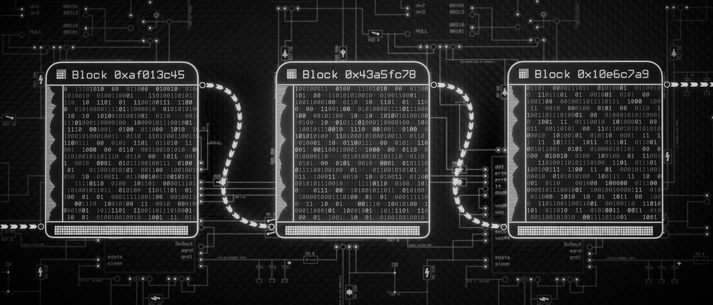

Profile

Introduction
Hi! I'm Santiago Lago, a 25 year old Blockchain Enthusiast living in Argentina. I consider myself curious, extroverted, optimistic, conscious and decently smart (for a primate). I enjoy combat sports, technology and discussing new ideas with interesting people.
Adaptable
Enter flow learning state
Find lateral solutions for complex problems
Proactively adventure into new challenges
Strategic
Understand the bigger picture
Plan with long term vision
Find the best use of available resources
Leader
Honest and Reliable
Strong communication and listening skills
Passionate about inspiring growth in others
"Life finds a way." - Dr. Malcom, Jurassic Park
Skills
Mindset
In the fast paced world of tomorrow, learning won't be a defined phase anymore, it will be a lifestyle. This is why I belive in a hands-on aproach to learning. We must understand how to Search, Filter, Absorb and Display all the information avaiable online in order to keep up and provide value to the dynamic world of the future.
Information Technology
Information Technology is something I've always been passionate about, specially the Internet, which I belive is one of the most powerful tools created in the history of Humanity. The Internet is connecting the world and IT is taking over almost every aspect of our life, creating an unlimited amount of potential and opportunities.
Economics
According to Wikipedia, Economics is the social science that studies the production, distribution, and consumption of goods and services. I think this only scratches the surface. Done right, economics is an extremely powerful predictor of behaviour. By analyzing the system and "gaming" it's incentives you can calculate, often with precision, the most likely outcome.
IT & Economics are my best tools, naturally I love BlockChains. Follow me for this type of content!
"Learning never exhausts the mind." - Leonardo da Vinci
Blockchain

Definition
A blockchain is a database of transactions that is updated and shared across many computers (Nodes) in a network. This network is Peer to Peer so everyone is allowed to join and receive a full copy of the Blockchain to verify with its own Node if the BlockChain is secure. Every time a transaction occurs, it gets stored in a block. When a block fills up, a new block must be mine to expand the database storage capacity - hence the name blockchain.
Mining
Mining works different depending on the BlockChain network, but essentially you need to resolve an equation involving the new Data, the Previous Block Identifier Number (Hash) and the New Hash. This way if someone wanted to change the information of an old block, all blocks after that would become corrupt and that miner would be isolated from the network. And if someone wanted to mine a new block with fake Data, they'd need to do so with the majority of computing power on the network.
Typical BlockChain Advantages
Decentralized
Secure
Inmutable
Typical BlockChain Disadvantages
Hard to Scale
Complex
Experimental
"We have proposed a system for electronic transactions without relying on trust." - Satoshi Nakamoto
Values
Principles
The individual as the center of moral principles.
Freedom and decentralization of power.
Time is the ultime currency.
Mission
Technology has put in an unique moment of history. The standards we set today will affect humanity for years to come. I belive Decentralized Finance plays a key role in the future of civilization. Money should belong to the people and be free (as in freedom) and not controlled by a small (and getting smaller every day) group of unelected burocrats/bankers. I truly belive the liberation of money will precipitate a period of inanimaginable growth and prosperity.
“If it is not right, do not do it; if it is not true, do not say it.” - Marcus Aurelius
Contact
Everything is Connected
Your life choices are far more important than you think. Over your lifetime you'll (for sure) meet more than 2000 persons and those 2000 persons will meet another 2000 persons. This means that as a person, you are a node in a Network. Whatever your signal is, it's three persons away from impacting the entire Human-Race in ways you cannot even comprehend.
Build Yourself
Because of this connection, there is a moral imperative and an individual incentive, to be the chage you want to see in the world by becoming the best version of yourself. Act in a fair, honest and reciprocal way. Build this network by connecting with each other and trying our best to help.
Let's Connect!
"It is the long history of humankind, and animal kind too, that those who learned to collaborate and improvise most effectively have prevailed." – Charles Darwin